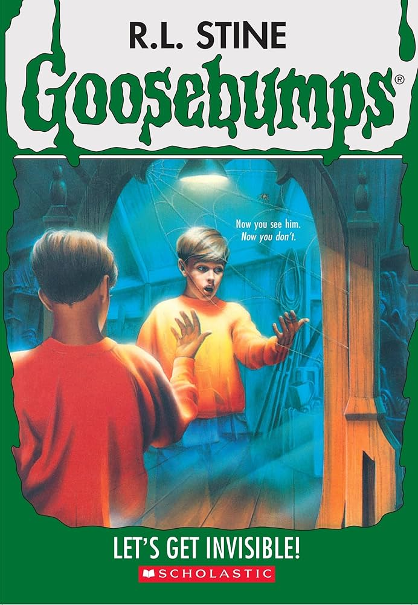
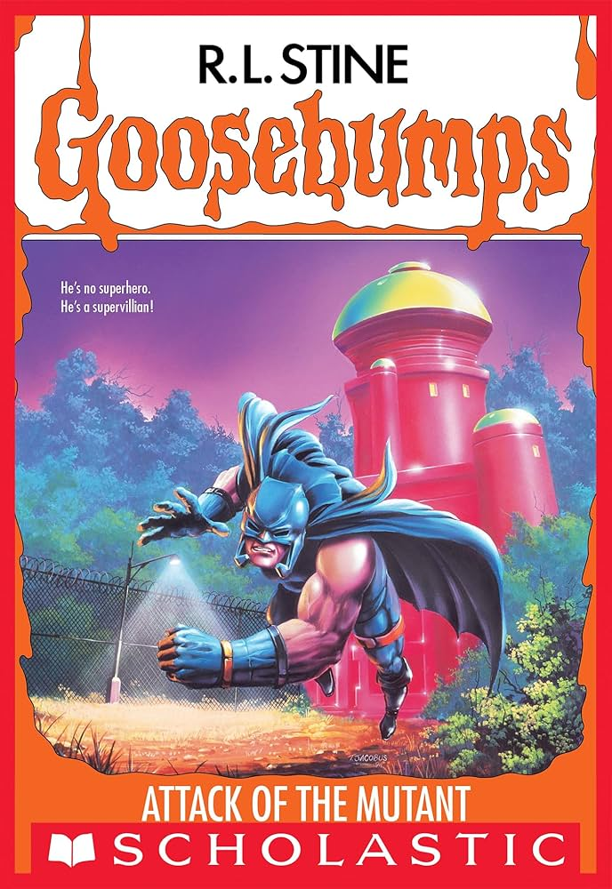
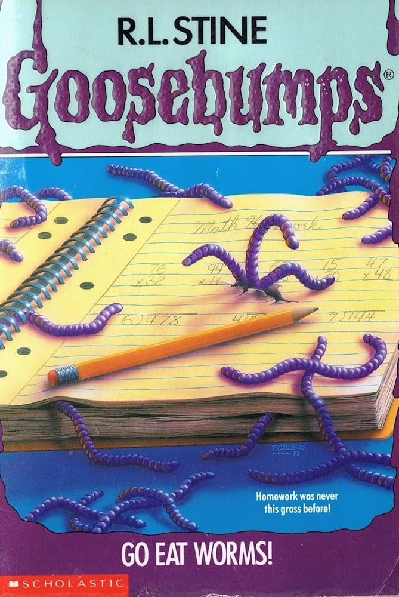

Ranking of the Original 62
Here is my ranking of the original 62 Goosebumps books. I've used a 0-10 rating system with one decimal place to distinguish the books a bit more. The rating descriptions below may not be reflective of every single book (e.g: some 9s might have slight negatives, not all 8’s are necessarily on the verge of being 9), but it’s a general guide to what I’m thinking. The main goal here was to avoid reactively rating books like a lot of other reviews do. For instance, they will rate a bad book 1/10. In my mind, a 1/10 would have to be so incomprehensibly bad to the point where the book wouldn’t even have the basic structure of a story.
| 9.0 and above | These are the best books in the series. They are close to perfect and arguably among Stine’s best works. |
| 8.0-8.9 | These are fantastic books. One or two minor nitpicks might keep them out of 9.0+, but they nevertheless are excellent reads. |
| 7.0-7.9 | These are good books. They will have a few flaws, but are enjoyable reads. |
| 6.0-6.9 | These books are below average or a mixed bag, but they can still be somewhat enjoyable. That said, they contain pretty significant flaws. |
| 5.0-5.9 | These are bad books. They contain several major flaws, and were not enjoyable to read. |
| Below 5.0 | These are very poorly written books that are the worst in the series. They were painful to finish and there was almost nothing I enjoyed about them. |
Fortunately, none of the Goosebumps books come close to that (but there are some stinkers…). The list is ordered from top to bottom for your enjoyment.
Let's Get Invisible - 9.5/10
I loved this one. The plot of this book is really well thought out with the idea of having an evil reflection living inside the mirror. On it's own it would be a cool concept, but having them be evil is genuinely creepy. Throughout the book, Stine masterfully describes being in that transcendent state between both worlds.

The twist at the end, it’s a bit… predictable I guess, but it’s still a good twist. Now I will say that although much of the book is just spent going back and forth with Max and friends in the mirror, I was engaged from start to the end. A lot of Goosebumps novels have an issue of cramming the plot into one section of the book, but this book did not have that issue at all. It was really well done with how the book led you on with Max coming suspicious as it went on. To me this felt like a book with a lot of care put into it with the little details here and there, like with Lefty’s right armed throw at the end, the thing with the dog. Things that don’t necessarily add much to the plot but make it feel more alive, you know? I also connected with the characters and how Lefty said to Max “you stink”, kinda reminds me of what my sibling used to say to me when I was younger to annoy me. One of the greatest Goosebumps books by far.Attack of the Mutant - 8.5/10This book is a fun one. It’s not really scary per se, but the whole supervillain and comic book concept it has going on was unique and well-executed by Stine. The scenes of Skipper sneaking around the Mutant’s headquarters were tense and engaging, even though the first time round nothing bad happened to Skipper. The twist of Libby being the Mutant at first didn’t sit right with me because I wondered: ‘why wouldn’t the Mutant just kill Skipper early?’ but then I realised that it’s because The Mutant wants Skipper to be in his comic for a little bit, and then attempts to end up destroying him. I did enjoy the twist of Libby being The Mutant and the final twist was cool.

Overall, the only minor fault I had with this book was the thing between molecule man/Fake Mutant, and The Mutant/Libby. I don’t think the changing aspect is bad but I do wonder why, when the Mutant was Libby and he was facing off against the Fake Mutant, did Stine have the following line: ““It only l-looks like a toy,” stammered Libby.”. This is an odd line. On the one hand, why would the Mutant be scared of Molecule Man, especially when the Molecule Man was only some sort of underling for him? On the other hand, it could be read as The Mutant being uncomfortable with killing his underling, but then he says ‘I’m a villain - I do very bad things”. It’s not a massive issue, but this turn of events could have been made a bit sleeker. Finally, while I can see how people might take issue with the whole existence of the comic world (for lack of a better phrase) not being properly explained, I do think the lack of explanation is offset by the fact the story heavily implies it's something that's largely invisible in normal reality (such as the the headquarters disappearing).Monster Blood I - 8.4/10This book had a detailed prose reminiscent of the earlier Goosebumps like Let’s Get Invisible. It just feels alive (no pun intended), and I really enjoyed the characters in this book, particularly Aunt Kathryn, who is an eccentric individual, and Evan and Andy were well written too. I liked the story, with the mystery of the monster blood growing and growing and what it would eventuate to. That the cat would be the evil one was not something I expected, so I enjoyed that twist. That said, an issue I have with this book is that the explanation around Sarabeth and her connection to Kathryn and her whole plan could have been better fleshed out. Sarabeth is supposedly using Kathryn to do her bidding but throughout the book she never actually does anything. The scenes where she was acting eccentric were good and I enjoyed that building of her character, but in retrospect it may have been useful to have Kathryn do something bad or something evil to make the reveal all the better. The prose and the detail Stine added were fantastic though, so this book belongs in the the 8 category.
Book fournormal text
Book fivenormal text
Book sixnormal text
Book sevennormal text
Book eightnormal text
Book ninenormal text
Book tennormal text
Book elevennormal text
Book twelvenormal text
Book thirteennormal text
Book fourteennormal text
Book fifteennormal text
Book sixteennormal text
Book seventeennormal text
Book eighteennormal text
Book nineteennormal text
Book twentynormal text
Book twenty-onenormal text
Book twenty-twonormal text
Book twenty-threenormal text
Book twenty-fournormal text
Book twenty-fivenormal text
Book twenty-sixnormal text
Book twenty-sevennormal text
Book twenty-eightnormal text
Book twenty-ninenormal text
Book thirtynormal text
Book thirty-onenormal text
Book thirty-twonormal text
Book thirty-threenormal text
Book thirty-fournormal text
Book thirty-fivenormal text
Book thirty-sixnormal text
Book thirty-sevennormal text
Book thirty-eightnormal text
Book thirty-ninenormal text
Book fortynormal text
Book forty-onenormal text
Book forty-twonormal text
Book forty-threenormal text
Book forty-fournormal text
Book forty-fivenormal text
Book forty-sixnormal text
Book forty-sevennormal text
Book forty-eightnormal text
Book forty-ninenormal text
Book fiftynormal text
Book fifty-onenormal text
Book fifty-twonormal text
Book fifty-threenormal text
Book fifty-fournormal text
Book fifty-fivenormal text
Book fifty-sixnormal text
Book fifty-sevennormal text
Book fifty-eightnormal text
Book fifty-ninenormal text
Go Eat Worms! - 5.3/10
The premise of this book is as stupid as it sounds. The main character, Todd, is constructed from the beginning to be an unlikeable character. He is a bit of a dick to everyone, yet annoyingly (or perhaps typically, for a Goosebumps character) he gets surprised when people don’t like him back. Not a great start, but the book gets worse. The plot of this book, if there is one, is another one of those ones where Stine probably thought of the title and then tried to shoehorn a story into it. Unfortunately, a title of ‘Go Eat Worms!’ leads to stilted dialogue like “But the worms held on, pulling him down, forcing him into the slimy brown water” and “Were the worms plotting and planning inside? Were they deciding which one of them would crawl upstairs and climb into Todd’s things?”.

After the first few weird occurrences, Todd thinks it might be his sister Regina pranking him, and the story ‘builds’ (I use that word generously) and ‘builds’ until the climax… where it is revealed it was Regina all along. I guess evil worms were too stupid to implement, but then why have this book at all with a half-baked story? I understand why Stine has regrets about this book. For one, the mysterious rumbling throughout the story would have made an interesting plot mystery if it wasn’t for the fact the danger of the mystery, a giant worm coming up, is resolved instantly after Regina’s paper mache bird from the start of the book appears and scares it off. In general, the repetitive pranks or instances of worms appearing where they shouldn’t eat up too much of the book. As a final sort of “F U” from this book the twist is something completely random for the sake of being a twist: you had a Giant Worm appear for two pages in the last chapter, now meet… Giant Butterfly! *ends book*. At least with something like Abominable Snowman of Pasadena, there’s some sort of monstrous or villainous element, but this book doesn’t even have that.Book sixty-onenormal text
Book sixty-twonormal text
← Back to Main Page